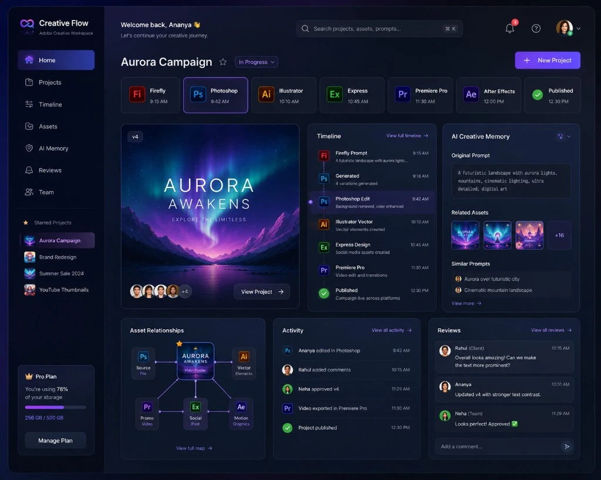
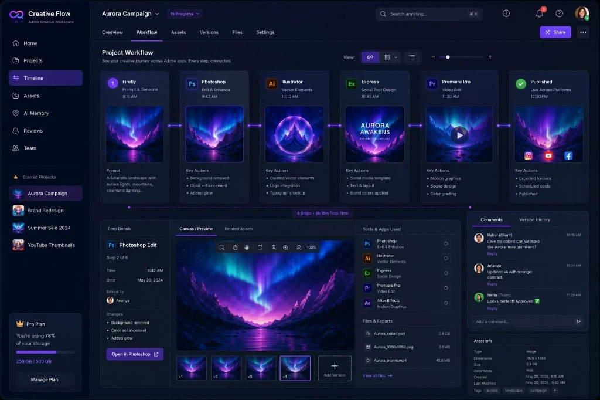

Designer interviews
Conversations with 12 freelancers, in-house designers, and art directors who ship multi-app campaigns every week.
Adobe Creative Flow
A unified timeline that connects prompts, assets, edits, versions, feedback, and approvals across Adobe’s creative ecosystem.
Generate concepts
Prompt → 6 directions
Refine imagery
Hero retouch v3
Build vector assets
Logo lockup
Create campaign outputs
5 formats · approved
Project Snapshot
Problem
Creative context is lost between applications.
Opportunity
Create one continuous project history.
Solution
A shared creative timeline across Adobe apps.
The Workflow Today
A single campaign passes through several Adobe applications. Between each one, the connection breaks — and the user becomes the integration layer.
Firefly
Generate concepts
Photoshop
Refine imagery
Illustrator
Build vector assets
Express
Create campaign outputs
The tools are connected by the user — not by the system.
The Main Problem
The Firefly prompt behind a selected image is rarely recoverable once work moves downstream.
File names carry the burden of history — final_v3_FINAL rarely answers which version was approved.
Comments live in email, chat, and review links — detached from the exact version they refer to.
Nothing records which banners, posts, and stories were derived from a given source image.
A creative director asks for the earlier concept approved last week. The designer must search across applications, folders, messages, and exports to reconstruct what the system never remembered.
Research & Evidence
Before designing anything, I ran a small qualitative study with working creatives and audited real project artifacts — to understand where the journey breaks, not just where the files live.
Conversations with 12 freelancers, in-house designers, and art directors who ship multi-app campaigns every week.
Observed 6 campaigns end-to-end — noting every export, rename, re-upload, and “which version is this?” moment.
Reviewed 240+ versioned files across shared project folders, mapping how naming conventions carry hidden history.
Analyzed 40+ forum, Reddit, and Discord threads about lost prompts, version confusion, and scattered feedback.
Studied how Libraries, Figma version history, Frame.io review, and Git commits preserve — or drop — context.
Most audited files carried version meaning in their names — final, FINAL, approved, v3_new. Designers invented naming rituals because no tool remembered for them.
Generation prompts were rarely saved anywhere. Once a direction was approved, recreating its original prompt became guesswork.
Comments arrived by email, chat, and review links — each detached from the exact version they referred to, and each a place where decisions quietly disappeared.
Shadowed designers regularly paused creative work to reassemble history — hunting for sources, comparing exports, and confirming which version was actually approved.
Designers don’t lose files — they lose the story around files. That reframed the brief: don’t build another asset manager; build a system that remembers the journey automatically.
The Product — Creative Timeline
Creative Flow records the journey automatically: what was generated, what changed, who commented, and what was approved — across every connected app.
Open the interactive timeline
Explore the live timeline in full screen — filter by app or person, switch views, expand every event from first prompt to final approval.
Opens in a new tab · Lumina Headphones Launch · 8 recorded events across 4 apps
Final Design
The product resolved into two connected views: a Project Home that holds the living memory of a campaign, and a Project Workflow that shows the journey step by step. Both draw from the same timeline underneath.

What this screen does
What it solves
In the study, recovering an original prompt was effectively impossible for 11 of 12 designers. Here it is pinned to the project permanently — zero reconstruction required.

What this screen does
What it solves
The 19-minute hunt for “the earlier approved one” becomes a single click on the stage where the approval happened — history answers the question, not the designer.
Outcomes
Baselines come from the research above. Each shift is the change in behavior the product delivers once the journey is recorded automatically.
UnrecoverableOne click
Prompt recovery
Every generation keeps its prompt, style references, and source links.
~19 min<1 min
Locating an approved version
Approvals are recorded against versions, so the answer is on the timeline.
3 channels1 place
Feedback & decisions
Comments stay pinned to the exact version and step they refer to.
Untracked100% traced
Derivative assets
Every banner, post, and story shows the approved source it came from.
Creative tools stop being four separate rooms and become one continuous studio — where the project itself remembers what was made, why, and what was decided.